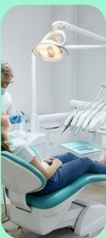
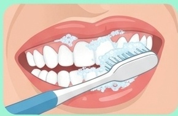
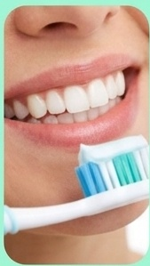

Manter uma boa saúde bucal é importante para o seu bem-estar, a sua autoestima e a saúde geral do seu corpo. Além disso, uma boca saudável é também aquela que proporciona uma boa mastigação, o que é fundamental para uma boa digestão dos alimentos e uma melhor absorção dos nutrientes. Para que se tenha um sorriso bonito e saudável, é preciso escovar os dentes todos os dias após cada refeição e também uma última vez antes de dormir.



A escovação é o principal método de remoção mecânica do biofilme dentário. A literatura recomenda a técnica de Bass modificada, considerada uma das mais eficazes.
A escolha da escova influencia diretamente a eficácia da higiene. A escova deve ter as características abaixo:
Escovas com cerdas duras podem causar abrasão dentária e recessão gengival ao longo do tempo.
A troca da escova deve ocorrer a cada 3 meses ou antes, se houver deformação das cerdas.
Os cuidados básicos de higiene bucal são fundamentais para a prevenção de doenças orais. A escovação correta, associada ao uso do fio dental, escolha adequada da escova e sua correta manutenção, constitui a base da saúde bucal.